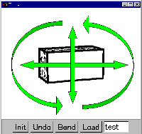

[1.Camera]
[2.Create]
[3.Paint]
[4.Extrude]
[5.Cut]
[6.Smooth]
[7.Bend]
[8.File]
Step 1: 物体の回転

1) 右ボタンのドラッグで物体を回転できます。
2) モデルをまわして見てください。左右上下の他、画面に平行にぐるっとまわすことができます。
3) 右ボタンのクリックに続いてすぐ右ボタンでドラッグすると拡大縮小できます。
練習できたら
step 2 へ
プログラムの動作がおかしくなったら、アプレットウィンドウを閉じて
Teddy を再スタート
してください。
Copyright (C) 1998
Takeo Igarashi